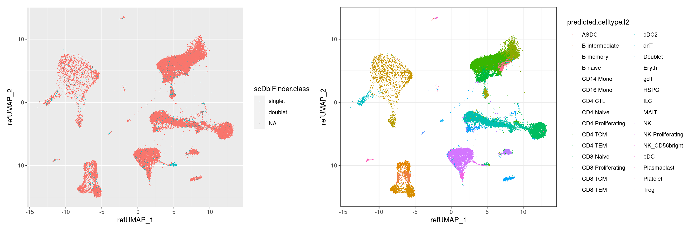
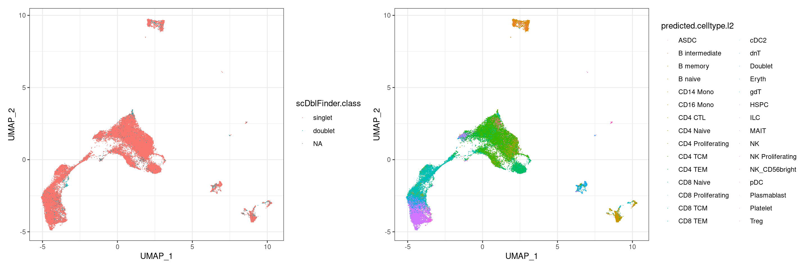
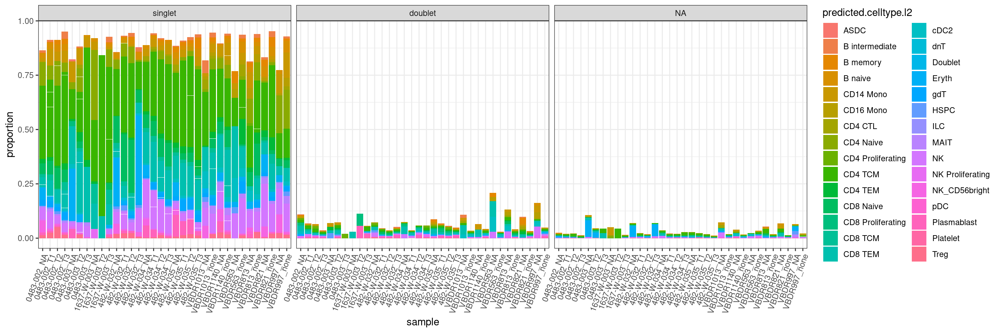

Last updated: 2022-08-31
Checks: 7 0
Knit directory: workflow_test1/
This reproducible R Markdown analysis was created with workflowr (version 1.7.0). The Checks tab describes the reproducibility checks that were applied when the results were created. The Past versions tab lists the development history.
Great! Since the R Markdown file has been committed to the Git repository, you know the exact version of the code that produced these results.
Great job! The global environment was empty. Objects defined in the global environment can affect the analysis in your R Markdown file in unknown ways. For reproduciblity it’s best to always run the code in an empty environment.
The command set.seed(20220831) was run prior to running
the code in the R Markdown file. Setting a seed ensures that any results
that rely on randomness, e.g. subsampling or permutations, are
reproducible.
Great job! Recording the operating system, R version, and package versions is critical for reproducibility.
Nice! There were no cached chunks for this analysis, so you can be confident that you successfully produced the results during this run.
Great job! Using relative paths to the files within your workflowr project makes it easier to run your code on other machines.
Great! You are using Git for version control. Tracking code development and connecting the code version to the results is critical for reproducibility.
The results in this page were generated with repository version ace89ed. See the Past versions tab to see a history of the changes made to the R Markdown and HTML files.
Note that you need to be careful to ensure that all relevant files for
the analysis have been committed to Git prior to generating the results
(you can use wflow_publish or
wflow_git_commit). workflowr only checks the R Markdown
file, but you know if there are other scripts or data files that it
depends on. Below is the status of the Git repository when the results
were generated:
Ignored files:
Ignored: .Rproj.user/
Untracked files:
Untracked: .gitignore
Untracked: install_workflowr.R
Untracked: workflow_test.Rproj
Untracked: workflow_test1/.Rprofile
Untracked: workflow_test1/.gitattributes
Untracked: workflow_test1/.gitignore
Untracked: workflow_test1/README.md
Untracked: workflow_test1/_workflowr.yml
Untracked: workflow_test1/code/
Untracked: workflow_test1/data/
Untracked: workflow_test1/output/
Untracked: workflow_test1/workflow_test1.Rproj
Note that any generated files, e.g. HTML, png, CSS, etc., are not included in this status report because it is ok for generated content to have uncommitted changes.
These are the previous versions of the repository in which changes were
made to the R Markdown
(workflow_test1/analysis/doublets_report.Rmd) and HTML
(workflow_test1/docs/doublets_report.html) files. If you’ve
configured a remote Git repository (see ?wflow_git_remote),
click on the hyperlinks in the table below to view the files as they
were in that past version.
| File | Version | Author | Date | Message |
|---|---|---|---|---|
| Rmd | ace89ed | GitHub | 2022-08-31 | Add files via upload |
## The following output is from scDblFinder
#take the output files, which include 3_prime_batch/preprocessing_output/non_batch_variation_removal
files <- dir("/stornext/Bioinf/data/bioinf-data/Papenfuss_lab/projects/roestie/roestielisa/PBMC/data/3_prime_batch_1/preprocessing_results/non_batch_variation_removal/", full.name = T)
files_annotation <- dir("/stornext/Bioinf/data/bioinf-data/Papenfuss_lab/projects/roestie/roestielisa/PBMC/data/3_prime_batch_1/preprocessing_results/annotation_label_transfer/", full.name = T)
files_doublets <- dir("/stornext/Bioinf/data/bioinf-data/Papenfuss_lab/projects/roestie/roestielisa/PBMC/data/3_prime_batch_1/preprocessing_results/doublet_identification/", full.name = T)#combine count dataframe by rows using seurat function merge
merged_combined <-
files |>
map(readRDS) |>
purrr::reduce(merge)
#have a look at the output generated by scDblFinder:
merged_combined_annotation_doublets <-
#join annotation
merged_combined |>
left_join(
files_annotation |>
map(readRDS) |>
purrr::reduce(bind_rows), by=".cell") |>
#join doublets identified
left_join(
files_doublets |>
map(readRDS) |>
purrr::reduce(bind_rows), by = c(".cell"))# 1a) UMAP plot, color by doublets, supervised
#plot doublets
p1 <- merged_combined_annotation_doublets |>
ggplot(aes(refUMAP_1, refUMAP_2, color = scDblFinder.class)) +
geom_point(shape=".")
#plot cell types
p2 <- merged_combined_annotation_doublets |>
ggplot(aes(refUMAP_1, refUMAP_2, color = predicted.celltype.l2)) +
geom_point(shape=".") +
theme_bw()
p1 + p2
# 1b) UMAP re-clustering, to do an unsupervised visualization of the clustering of the doublets.
#selecting gene names for features
all.genes <- rownames(merged_combined_annotation_doublets)
#re-clustering
merged_combined_annotation_doublets_reclustered <-
merged_combined_annotation_doublets |>
RunPCA(features = all.genes) |>
FindNeighbors(dims = 1:30) |>
FindClusters(resolution = 0.5) |>
RunUMAP(dims = 1:30, spread = 0.5,min.dist = 0.01, n.neighbors = 10L)Warning in PrepDR(object = object, features = features, verbose = verbose):
The following 36218 features requested have not been scaled (running reduction
without them): MIR1302-2HG, FAM138A, OR4F5, AL627309.1, AL627309.3, AL627309.2,
AL627309.5, AL627309.4, AP006222.2, AL732372.1, OR4F29, AC114498.1, OR4F16,
AL669831.2, LINC01409, FAM87B, LINC01128, LINC00115, FAM41C, AL645608.6,
AL645608.2, AL645608.4, LINC02593, SAMD11, NOC2L, KLHL17, PLEKHN1, PERM1,
AL645608.7, HES4, AL645608.1, AGRN, AL645608.5, AL645608.8, RNF223, C1orf159,
AL390719.3, LINC01342, AL390719.2, TTLL10-AS1, TTLL10, TNFRSF18, TNFRSF4, SDF4,
B3GALT6, C1QTNF12, AL162741.1, UBE2J2, LINC01786, SCNN1D, ACAP3, PUSL1, INTS11,
AL139287.1, CPTP, TAS1R3, DVL1, MXRA8, AURKAIP1, CCNL2, MRPL20-AS1, MRPL20,
AL391244.2, ANKRD65, AL391244.1, TMEM88B, LINC01770, VWA1, ATAD3C, ATAD3B,
ATAD3A, TMEM240, SSU72, AL645728.1, FNDC10, AL691432.4, AL691432.2, MIB2,
MMP23B, CDK11B, FO704657.1, SLC35E2B, CDK11A, SLC35E2A, NADK, GNB1, AL109917.1,
CALML6, TMEM52, CFAP74, AL391845.2, GABRD, AL391845.1, PRKCZ, AL590822.2,
PRKCZ-AS1, FAAP20, AL590822.1, AL590822.3, MORN1, AL589739.1, AL513477.2,
RER1, PEX10, PLCH2, AL139246.1, AL139246.4, PANK4, HES5, AL139246.5, TNFRSF14-
AS1, TNFRSF14, AL139246.3, PRXL2B, MMEL1, AL831784.1, TTC34, AC242022.2,
AC242022.1, AL592464.2, AL592464.3, AL592464.1, AL589702.1, ACTRT2, PRDM16-DT,
PRDM16, AL008733.1, AL590438.1, AL354743.2, AL354743.1, ARHGEF16, AL512413.1,
MEGF6, AL513320.1, TPRG1L, WRAP73, TP73, AL136528.1, AL136528.2, CCDC27, SMIM1,
LRRC47, AL365330.1, CEP104, DFFB, C1orf174, LINC01134, LINC01346, LINC01345,
LINC02780, AL805961.1, LINC01777, AL355602.1, Z98747.1, LINC01646, AJAP1,
Z98886.1, BX005132.1, LINC02781, LINC02782, AL139823.1, Z98259.3, Z98259.2,
Z98259.1, AL365255.1, NPHP4, KCNAB2, CHD5, RPL22, AL031847.1, RNF207, ICMT,
LINC00337, HES3, GPR153, ACOT7, AL031848.2, HES2, ESPN, AL031848.1, TNFRSF25,
PLEKHG5, NOL9, TAS1R1, ZBTB48, KLHL21, PHF13, THAP3, DNAJC11, LINC01672,
AL591163.1, CAMTA1-DT, CAMTA1, AL512330.1, CAMTA1-IT1, Z97987.1, AL365194.1,
AL359881.3, AL359881.2, AL359881.1, VAMP3, Z98884.2, PER3, Z98884.1, UTS2,
TNFRSF9, PARK7, AL034417.4, AL034417.3, ERRFI1, AL034417.2, LINC01714,
AL358876.2, SLC45A1, RERE, RERE-AS1, AL357552.2, ENO1, ENO1-AS1, CA6, SLC2A7,
SLC2A5, GPR157, MIR34AHG, LNCTAM34A, H6PD, SPSB1, BX323043.1, LINC02606,
AL928921.1, SLC25A33, TMEM201, PIK3CD, PIK3CD-AS1, PIK3CD-AS2, CLSTN1,
CTNNBIP1, AL357140.1, AL357140.4, LZIC, AL357140.2, NMNAT1, AL603962.1, RBP7,
UBE4B, KIF1B, AL139424.3, AL139424.2, PGD, AL139424.1, CENPS, CORT, DFFA,
AL354956.1, PEX14, AL139423.2, CASZ1, AL139423.1, C1orf127, TARDBP, MASP2,
AL109811.2, EXOSC10, AL109811.1, EXOSC10-AS1, MTOR, MTOR-AS1, ANGPTL7, UBIAD1,
AL031291.1, DISP3, AL590989.1, LINC01647, AL031731.1, FBXO2, FBXO44, FBXO6,
MAD2L2, DRAXIN, AGTRAP, C1orf167, AL953897.1, MTHFR, CLCN6, NPPA, NPPB,
AL021155.5, KIAA2013, PLOD1, AL096840.2, MFN2, MIIP, TNFRSF8, AL357835.1,
TNFRSF1B, VPS13D, LINC02766, AC254633.1, AADACL4, AADACL3, C1orf158, PRAMEF12,
PRAMEF1, LINC01784, PRAMEF11, HNRNPCL1, PRAMEF2, PRAMEF4, PRAMEF10, PRAMEF7,
PRAMEF6, PRAMEF27, HNRNPCL3, PRAMEF25, HNRNPCL2, AC245056.1, PRAMEF26, HNRNPCL4,
PRAMEF9, PRAMEF13, PRAMEF18, PRAMEF5, PRAMEF8, PRAMEF33, PRAMEF15, AC243961.1,
PRAMEF14, PRAMEF19, PRAMEF17, PRAMEF20, LRRC38, AL354712.1, PDPN, AL359771.1,
PRDM2, KAZN, AL357873.1, KAZN-AS1, AL031293.1, TMEM51-AS1, TMEM51, C1orf195,
FHAD1, AL031283.2, AL031283.3, AL031283.1, EFHD2, CTRC, CELA2A, CELA2B, CASP9,
DNAJC16, AL121992.3, AGMAT, AL121992.1, DDI2, RSC1A1, AL121992.2, PLEKHM2,
AL450998.3, SLC25A34, SLC25A34-AS1, TMEM82, FBLIM1, UQCRHL, AL450998.2, SPEN,
ZBTB17, SRARP, AL355994.3, HSPB7, CLCNKA, CLCNKB, FAM131C, EPHA2, AL451042.2,
AL451042.1, ARHGEF19-AS1, ARHGEF19, AL109627.1, CPLANE2, FBXO42, SZRD1, SPATA21,
NECAP2, LINC01772, AL137802.2, AL137802.1, LINC01783, NBPF1, AL137798.1,
AL137798.2, AL021920.1, AL021920.3, CROCC, BX284668.1, BX284668.2, BX284668.5,
BX284668.6, MFAP2, AL049569.2, AL049569.1, ATP13A2, SDHB, PADI2, LINC02783,
AL590644.1, PADI1, PADI3, PADI4, PADI6, RCC2-AS1, RCC2, ARHGEF10L, LINC02810,
ACTL8, AL357509.1, LINC01654, IGSF21, IGSF21-AS1, AL591896.1, KLHDC7A, PAX7,
TAS1R2, ALDH4A1, IFFO2, AL137127.1, UBR4, EMC1-AS1, EMC1, MRTO4, AKR7A3, AKR7A2,
SLC66A1, CAPZB, MICOS10, AL031727.2, NBL1, HTR6, TMCO4, RNF186, AL391883.1,
OTUD3, PLA2G2E, PLA2G2A, PLA2G5, PLA2G2D, PLA2G2F, Z98257.1, PLA2G2C, UBXN10-
AS1, UBXN10, LINC01757, Z98257.2, VWA5B1, AL020998.1, LINC01141, AL139254.1,
AL139254.2, AL139254.3, CAMK2N1, MUL1, FAM43B, CDA, PINK1, PINK1-AS, KIF17,
SH2D5, AL663074.1, HP1BP3, EIF4G3, AL031005.2, ECE1, AL031005.1, AL031728.1,
AL592309.2, NBPF3, ALPL, LINC02596, RAP1GAP, USP48, LDLRAD2, HSPG2, CELA3B,
CELA3A, LINC01635, LINC00339, CDC42, CDC42-AS1, CDC42-IT1, WNT4, AL445253.1,
ZBTB40, ZBTB40-IT1, EPHA8, C1QA, C1QC, C1QB, EPHB2, AL512444.1, LACTBL1,
TEX46, KDM1A, AL031428.1, LUZP1, HTR1D, LINC01355, AL109936.6, HNRNPR, ZNF436,
ZNF436-AS1, AL109936.2, TCEA3, ASAP3, E2F2, AL021154.1, ID3, AL450043.1, MDS2,
RPL11, ELOA-AS1, ELOA, PITHD1, LYPLA2, GALE, HMGCL, FUCA1, CNR2, AL590609.3,
PNRC2, SRSF10, AL591178.1, MYOM3, AL591178.2, IL22RA1, IFNLR1, LINC02800,
AL138902.1, GRHL3, STPG1, NIPAL3, RCAN3AS, NCMAP-DT, NCMAP, SRRM1, AL445648.1,
CLIC4, RUNX3, AL445471.1, AL445471.2, LINC02793, AL050344.1, AL031432.1, SYF2,
AL031432.4, AL031432.5, RSRP1, AL031432.3, RHD, TMEM50A, RHCE, MACO1, LDLRAP1,
AL606491.1, MAN1C1, AL031280.1, SELENON, AL020996.1, MTFR1L, AL020996.3,
AUNIP, AL033528.2, PAQR7, STMN1, PAFAH2, EXTL1, SLC30A2, AL391650.2, TRIM63,
PDIK1L, FAM110D, C1orf232, AL391650.1, ZNF593, CNKSR1, CATSPER4, CEP85, UBXN11,
CRYBG2, ZNF683, LIN28A, DHDDS, AL513365.2, RPS6KA1, AL512408.1, ARID1A, PIGV,
ZDHHC18, SFN, GPN2, AL034380.1, GPATCH3, NUDC, NR0B2, KDF1, TRNP1, TENT5B,
SLC9A1, AL590640.1, WDTC1, TMEM222, SYTL1, MAP3K6, FCN3, CD164L2, GPR3, WASF2,
FO393419.2, BX293535.1, AHDC1, FGR, LINC02574, AL445490.1, AL020997.5, FAM76A,
STX12, AL020997.2, AL020997.3, AL020997.4, PPP1R8, THEMIS2, RPA2, SMPDL3B,
AL512288.1, XKR8, EYA3, PTAFR, DNAJC8, ATP5IF1, AL353622.1, AL353622.2, SESN2,
MED18, PHACTR4, RCC1, TRNAU1AP, SNHG12, TAF12, RAB42, LINC01715, AL360012.1,
GMEB1, YTHDF2, OPRD1, AL009181.1, EPB41, TMEM200B, AL357500.1, SRSF4, MECR,
AL590729.1, PTPRU, LINC01756, AC092265.1, AL645944.2, LINC01648, AL137076.1,
AL161638.2, AL161638.1, MATN1, MATN1-AS1, AL137857.1, LAPTM5, AL137027.1,
LINC01778, AL445235.1, SDC3, PUM1, NKAIN1, SNRNP40, ZCCHC17, AL451070.1, FABP3,
SERINC2, LINC01226, AC114488.1, TINAGL1, HCRTR1, PEF1, AC114488.2, AC114488.3,
COL16A1, ADGRB2, AL354919.2, SPOCD1, AL354919.1, AL136115.2, PTP4A2, AL136115.1,
AL136115.3, KHDRBS1, AL445248.1, TMEM39B, KPNA6, AL049795.2, TXLNA, CCDC28B,
AL049795.1, IQCC, DCDC2B, TMEM234, EIF3I, FAM167B, HDAC1, MARCKSL1, AL109945.1,
TSSK3, FAM229A, BSDC1, ZBTB8B, ZBTB8A, ZBTB8OS, RBBP4, SYNC, AC114489.1,
KIAA1522, YARS, S100PBP, FNDC5, HPCA, TMEM54, AL031602.2, RNF19B, AL020995.1,
AK2, AZIN2, TRIM62, AL662907.3, ZNF362, AL513327.3, A3GALT2, AL513327.1, PHC2,
AL513327.2, ZSCAN20, CSMD2, HMGB4, CSMD2-AS1, C1orf94, AC099565.1, SMIM12,
GJB5, GJB4, AL121988.1, GJB3, GJA4, AL122010.1, DLGAP3, TMEM35B, ZMYM6, ZMYM1,
AL590434.1, SFPQ, ZMYM4, ZMYM4-AS1, KIAA0319L, NCDN, AC004865.2, TFAP2E,
PSMB2, C1orf216, CLSPN, AL354864.1, AGO4, AGO1, AL139286.3, AL139286.2, AGO3,
AL138787.2, TEKT2, ADPRHL2, COL8A2, TRAPPC3, MAP7D1, THRAP3, SH3D21, EVA1B,
AL591845.1, STK40, LSM10, OSCP1, MRPS15, CSF3R, AL596257.1, AC117945.2,
AC117945.1, GRIK3, AL031430.1, AL353604.1, LINC01137, ZC3H12A, MEAF6, SNIP1,
DNALI1, GNL2, AL513220.1, RSPO1, C1orf109, CDCA8, EPHA10, MANEAL, AL929472.3,
YRDC, C1orf122, MTF1, AL929472.2, INPP5B, SF3A3, FHL3, UTP11, POU3F1, MIR3659HG,
LINC02786, AL390839.1, AL390839.2, LINC01343, LINC01685, AL354702.2, RRAGC,
AL139260.1, MYCBP, GJA9, RHBDL2, AKIRIN1, NDUFS5, MACF1, AL356055.1, AL442071.2,
AL442071.1, BMP8A, PABPC4, PABPC4-AS1, HEYL, AL035404.2, NT5C1A, HPCAL4,
PPIE, BMP8B, OXCT2, BMP8B-AS1, AL033527.3, AL033527.4, LINC02811, TRIT1, MYCL,
AL033527.2, MFSD2A, CAP1, PPT1, RLF, TMCO2, AL050341.2, ZMPSTE24, COL9A2, SMAP2,
AL031985.4, ZFP69B, AL031985.3, ZFP69, AL603839.3, EXO5, AL603839.1, AL603839.2,
ZNF684, AL356379.2, RIMS3, AL031289PC_ 1
Positive: NKG7, GNLY, CCL5, GZMB, GZMH, GZMA, CST7, FGFBP2, CTSW, KLRD1
HOPX, SPON2, CMC1, IFITM2, KLRB1, KLRK1, CD63, PFN1, ID2, LGALS1
C12orf75, S100A4, ZEB2, SH3BGRL3, SRGN, ARL4C, MT-CO1, CTSC, RHOC, ACTB
Negative: LTB, IL7R, HLA-DRA, RPL23, CD74, AIF1, MAL, FOS, CCR7, LDHB
FTH1, JUNB, TCF7, VIM, LYZ, COTL1, NOSIP, IGHM, RCAN3, SOCS3
LEF1, FOXP1, LST1, MYC, S100A9, IGKC, NCF1, FTL, SELL, GPR183
PC_ 2
Positive: IL7R, LTB, TRBC1, TCF7, TRBC2, TRAC, LDHB, BCL11B, CD3E, MAL
CCR7, CD3D, NOSIP, LEF1, PRKCQ-AS1, CD3G, IL32, ETS1, RCAN3, MALAT1
CD8B, CD7, TXNIP, CD2, CD27, FOXP1, LCK, BTG1, LIME1, CD69
Negative: HLA-DRA, LYZ, CD74, FTL, S100A9, HLA-DRB1, CTSS, FTH1, AIF1, LST1
LGALS1, PSAP, S100A6, HLA-DPA1, S100A4, S100A11, NEAT1, COTL1, SAT1, HLA-DPB1
LGALS3, S100A10, VIM, GAPDH, HLA-DRB5, ACTB, NAMPT, ATP2B1-AS1, SRGN, FOS
PC_ 3
Positive: S100A4, S100A6, IL7R, VIM, S100A11, LYZ, S100A9, S100A10, ANXA1, NEAT1
AIF1, FTL, LGALS1, FOS, IL32, FTH1, TIMP1, LST1, GAPDH, LGALS3
SRGN, TRAC, ACTB, TMSB4X, PSAP, SH3BGRL3, TRBC1, COTL1, FYB1, NAMPT
Negative: CD74, HLA-DRA, IGHM, HLA-DRB1, IGKC, HLA-DPA1, HLA-DPB1, HLA-DRB5, IGLC2, IGLC3
IGLC1, CD83, IGHA1, CXCR4, MT-CO2, TLE1, YBX3, GNLY, NKG7, NCF1
PMAIP1, MT-CO1, MT-CO3, ITM2C, EZR, FCMR, SNX3, JUND, MT-ATP6, GZMB
PC_ 4
Positive: IL32, CRIP1, LTB, CD52, PPIB, ACTG1, SUB1, IL7R, S100A4, ITGB1
HSP90B1, SEC11C, VIM, TRAC, GAPDH, SEC61B, CALR, ISG20, TMSB4X, MT-CO3
ITM2C, MT-CO1, HSPA5, AQP3, IGKC, MT-ATP6, MT-CO2, PDIA6, SSR4, S100A10
Negative: HBB, HBA2, HBA1, UBB, SLC25A39, GNLY, BNIP3L, S100A9, LYZ, YBX3
AIF1, FTL, BPGM, CTSS, NCOA4, LST1, GZMB, LGALS3, FGFBP2, PSAP
SPON2, GLUL, NKG7, KLRD1, NAMPT, CCL3, ZEB2, FTH1, AC020916.1, ATP2B1-AS1
PC_ 5
Positive: FOS, KLRB1, JUN, JUNB, DUSP1, BTG1, NFKBIA, IL7R, MALAT1, ZFP36
CXCR4, ZFP36L2, GNLY, CD69, IER2, FOSB, DUSP2, KLF6, TXNIP, JUND
FOXP1, TNFAIP3, H3F3B, LTB, ID2, KLRD1, TSC22D3, MT-ND3, NEAT1, BTG2
Negative: HBA1, HBA2, HBB, UBB, SLC25A39, LGALS1, LGALS3, BPGM, PPIB, BNIP3L
SEC11C, YBX3, ITM2C, HSP90B1, SUB1, GAPDH, CALR, S100A4, NCOA4, TENT5C
UBE2J1, SDF2L1, CRIP1, SSR3, MYDGF, ACTG1, PDIA6, SEC61B, ANXA2, GSPT1 Computing nearest neighbor graphComputing SNNModularity Optimizer version 1.3.0 by Ludo Waltman and Nees Jan van Eck
Number of nodes: 81090
Number of edges: 2268360
Running Louvain algorithm...
Maximum modularity in 10 random starts: 0.9125
Number of communities: 22
Elapsed time: 38 secondsWarning: The default method for RunUMAP has changed from calling Python UMAP via reticulate to the R-native UWOT using the cosine metric
To use Python UMAP via reticulate, set umap.method to 'umap-learn' and metric to 'correlation'
This message will be shown once per session14:46:49 UMAP embedding parameters a = 5.72 b = 0.810914:46:49 Read 81090 rows and found 30 numeric columns14:46:49 Using Annoy for neighbor search, n_neighbors = 1014:46:49 Building Annoy index with metric = cosine, n_trees = 500% 10 20 30 40 50 60 70 80 90 100%[----|----|----|----|----|----|----|----|----|----|**************************************************|
14:47:01 Writing NN index file to temp file /tmp/RtmpSCz3xF/file57b87fa68ee0
14:47:01 Searching Annoy index using 1 thread, search_k = 1000
14:47:22 Annoy recall = 100%
14:47:24 Commencing smooth kNN distance calibration using 1 thread with target n_neighbors = 10
14:47:27 Initializing from normalized Laplacian + noise (using irlba)
14:47:31 Commencing optimization for 200 epochs, with 1183288 positive edges
14:48:33 Optimization finished#plot doublets
p3 <- merged_combined_annotation_doublets_reclustered |>
ggplot(aes(UMAP_1, UMAP_2, color = scDblFinder.class)) +
geom_point(shape=".") +
guides(color = guide_legend(override.aes = list(size = 5))) +
theme_bw()
#plot cell types
p4 <- merged_combined_annotation_doublets_reclustered |>
ggplot(aes(UMAP_1, UMAP_2, color = predicted.celltype.l2)) +
geom_point(shape=".") +
guides(color = guide_legend(override.aes = list(size = 5))) +
theme_bw()
p3 + p4
# 2) Create the composition of the doublets
merged_combined_annotation_doublets %>% select(sample, scDblFinder.class) %>% table()tidyseurat says: Key columns are missing. A data frame is returned for independent data analysis. scDblFinder.class
sample singlet doublet
0483-002_NA 1114 61
0483-002_T1 3225 118
0483-002_T2 1189 38
0483-002_T3 3952 75
0483-003_NA 148 4
0483-003_T2 8637 363
0483-003_T3 103 1
1637-W-003_NA 63 1
1637-W-003_T2 51 2
1637-W-003_T3 1220 32
482-W-032_NA 1038 44
482-W-032_T1 3751 91
482-W-032_T2 4048 77
482-W-032_T3 2017 74
482-W-034_NA 876 38
482-W-034_T1 6157 123
482-W-034_T2 3370 92
482-W-034_T3 1319 36
482-W-035_NA 1133 53
482-W-035_T1 3873 128
482-W-035_T2 4437 132
482-W-035_T3 4389 96
VBDR1013_NA 128 9
VBDR1013_none 3666 67
VBDR1140_NA 478 16
VBDR1140_none 4472 97
VBDR563_NA 58 8
VBDR563_none 1588 27
VBDR813_NA 305 23
VBDR813_none 4291 95
VBDR821_NA 299 16
VBDR821_none 3384 58
VBDR997_NA 169 17
VBDR997_none 1969 50#calculate proportion and plot
plot_composition_proportion_faceted <-
merged_combined_annotation_doublets |>
select(sample, nCount_SCT, predicted.celltype.l2, scDblFinder.class) |>
# create frquency column
mutate(frequency = nCount_SCT/sum(nCount_SCT)*100) |>
# create the proportion column
group_by(sample) |>
mutate(tot_sample_proportion = sum(frequency)) |>
ungroup() |>
mutate(proportion = (frequency * 1)/tot_sample_proportion) |>
#plot proportion
ggplot(aes(x = sample, y = proportion, fill = predicted.celltype.l2)) +
geom_bar(stat = "identity") +
theme_bw() +
facet_wrap(~scDblFinder.class) +
theme(axis.text.x=element_text(angle=70, hjust=1))tidyseurat says: Key columns are missing. A data frame is returned for independent data analysis.#visualise
plot_composition_proportion_faceted
sessionInfo()R version 4.2.0 (2022-04-22)
Platform: x86_64-pc-linux-gnu (64-bit)
Running under: CentOS Linux 7 (Core)
Matrix products: default
BLAS: /stornext/System/data/apps/R/R-4.2.0/lib64/R/lib/libRblas.so
LAPACK: /stornext/System/data/apps/R/R-4.2.0/lib64/R/lib/libRlapack.so
locale:
[1] LC_CTYPE=en_US.UTF-8 LC_NUMERIC=C
[3] LC_TIME=en_US.UTF-8 LC_COLLATE=en_US.UTF-8
[5] LC_MONETARY=en_US.UTF-8 LC_MESSAGES=en_US.UTF-8
[7] LC_PAPER=en_US.UTF-8 LC_NAME=C
[9] LC_ADDRESS=C LC_TELEPHONE=C
[11] LC_MEASUREMENT=en_US.UTF-8 LC_IDENTIFICATION=C
attached base packages:
[1] stats4 stats graphics grDevices utils datasets methods
[8] base
other attached packages:
[1] tidySingleCellExperiment_1.6.3 SingleCellExperiment_1.18.0
[3] SummarizedExperiment_1.26.1 Biobase_2.56.0
[5] GenomicRanges_1.48.0 GenomeInfoDb_1.32.3
[7] IRanges_2.30.1 S4Vectors_0.34.0
[9] BiocGenerics_0.42.0 MatrixGenerics_1.8.1
[11] matrixStats_0.62.0 tidyseurat_0.5.3
[13] ttservice_0.2.2 scDblFinder_1.10.0
[15] glue_1.6.2 sp_1.5-0
[17] SeuratObject_4.1.0 Seurat_4.1.1
[19] forcats_0.5.2 stringr_1.4.1
[21] dplyr_1.0.9 purrr_0.3.4
[23] readr_2.1.2 tidyr_1.2.0
[25] tibble_3.1.8 ggplot2_3.3.6
[27] tidyverse_1.3.2 workflowr_1.7.0
loaded via a namespace (and not attached):
[1] rtracklayer_1.56.1 scattermore_0.8
[3] knitr_1.40 irlba_2.3.5
[5] DelayedArray_0.22.0 data.table_1.14.2
[7] rpart_4.1.16 RCurl_1.98-1.8
[9] generics_0.1.3 ScaledMatrix_1.4.0
[11] callr_3.7.2 cowplot_1.1.1
[13] RANN_2.6.1 future_1.27.0
[15] tzdb_0.3.0 spatstat.data_2.2-0
[17] xml2_1.3.3 lubridate_1.8.0
[19] httpuv_1.6.5 assertthat_0.2.1
[21] viridis_0.6.2 gargle_1.2.0
[23] xfun_0.32 hms_1.1.2
[25] jquerylib_0.1.4 evaluate_0.16
[27] promises_1.2.0.1 fansi_1.0.3
[29] restfulr_0.0.15 dbplyr_2.2.1
[31] readxl_1.4.1 igraph_1.3.4
[33] DBI_1.1.3 htmlwidgets_1.5.4
[35] spatstat.geom_2.4-0 googledrive_2.0.0
[37] ellipsis_0.3.2 backports_1.4.1
[39] deldir_1.0-6 sparseMatrixStats_1.8.0
[41] vctrs_0.4.1 ROCR_1.0-11
[43] abind_1.4-5 cachem_1.0.6
[45] withr_2.5.0 progressr_0.10.1
[47] sctransform_0.3.4 GenomicAlignments_1.32.1
[49] scran_1.24.0 goftest_1.2-3
[51] cluster_2.1.3 lazyeval_0.2.2
[53] crayon_1.5.1 edgeR_3.38.4
[55] pkgconfig_2.0.3 labeling_0.4.2
[57] nlme_3.1-157 vipor_0.4.5
[59] rlang_1.0.4 globals_0.16.1
[61] lifecycle_1.0.1 miniUI_0.1.1.1
[63] modelr_0.1.9 rsvd_1.0.5
[65] cellranger_1.1.0 rprojroot_2.0.3
[67] polyclip_1.10-0 lmtest_0.9-40
[69] Matrix_1.4-1 zoo_1.8-10
[71] reprex_2.0.2 beeswarm_0.4.0
[73] whisker_0.4 ggridges_0.5.3
[75] processx_3.7.0 googlesheets4_1.0.1
[77] png_0.1-7 viridisLite_0.4.1
[79] rjson_0.2.21 bitops_1.0-7
[81] getPass_0.2-2 KernSmooth_2.23-20
[83] Biostrings_2.64.1 DelayedMatrixStats_1.18.0
[85] parallelly_1.32.1 spatstat.random_2.2-0
[87] beachmat_2.12.0 scales_1.2.1
[89] magrittr_2.0.3 plyr_1.8.7
[91] ica_1.0-3 zlibbioc_1.42.0
[93] compiler_4.2.0 dqrng_0.3.0
[95] BiocIO_1.6.0 RColorBrewer_1.1-3
[97] fitdistrplus_1.1-8 Rsamtools_2.12.0
[99] cli_3.3.0 XVector_0.36.0
[101] listenv_0.8.0 patchwork_1.1.2
[103] pbapply_1.5-0 ps_1.7.1
[105] MASS_7.3-56 mgcv_1.8-40
[107] tidyselect_1.1.2 stringi_1.7.8
[109] highr_0.9 yaml_2.3.5
[111] BiocSingular_1.12.0 locfit_1.5-9.6
[113] ggrepel_0.9.1 grid_4.2.0
[115] sass_0.4.2 tools_4.2.0
[117] future.apply_1.9.0 parallel_4.2.0
[119] rstudioapi_0.14 bluster_1.6.0
[121] git2r_0.30.1 metapod_1.4.0
[123] gridExtra_2.3 farver_2.1.1
[125] Rtsne_0.16 digest_0.6.29
[127] rgeos_0.5-9 shiny_1.7.2
[129] Rcpp_1.0.9 broom_1.0.0
[131] scuttle_1.6.3 later_1.3.0
[133] RcppAnnoy_0.0.19 httr_1.4.4
[135] colorspace_2.0-3 rvest_1.0.3
[137] XML_3.99-0.10 fs_1.5.2
[139] tensor_1.5 reticulate_1.25
[141] splines_4.2.0 uwot_0.1.14
[143] statmod_1.4.37 spatstat.utils_2.3-1
[145] scater_1.24.0 xgboost_1.6.0.1
[147] plotly_4.10.0 xtable_1.8-4
[149] jsonlite_1.8.0 R6_2.5.1
[151] pillar_1.8.1 htmltools_0.5.3
[153] mime_0.12 fastmap_1.1.0
[155] BiocParallel_1.30.3 BiocNeighbors_1.14.0
[157] codetools_0.2-18 utf8_1.2.2
[159] lattice_0.20-45 bslib_0.4.0
[161] spatstat.sparse_2.1-1 ggbeeswarm_0.6.0
[163] leiden_0.4.2 survival_3.3-1
[165] limma_3.52.2 rmarkdown_2.16
[167] munsell_0.5.0 GenomeInfoDbData_1.2.8
[169] haven_2.5.1 reshape2_1.4.4
[171] gtable_0.3.0 spatstat.core_2.4-4